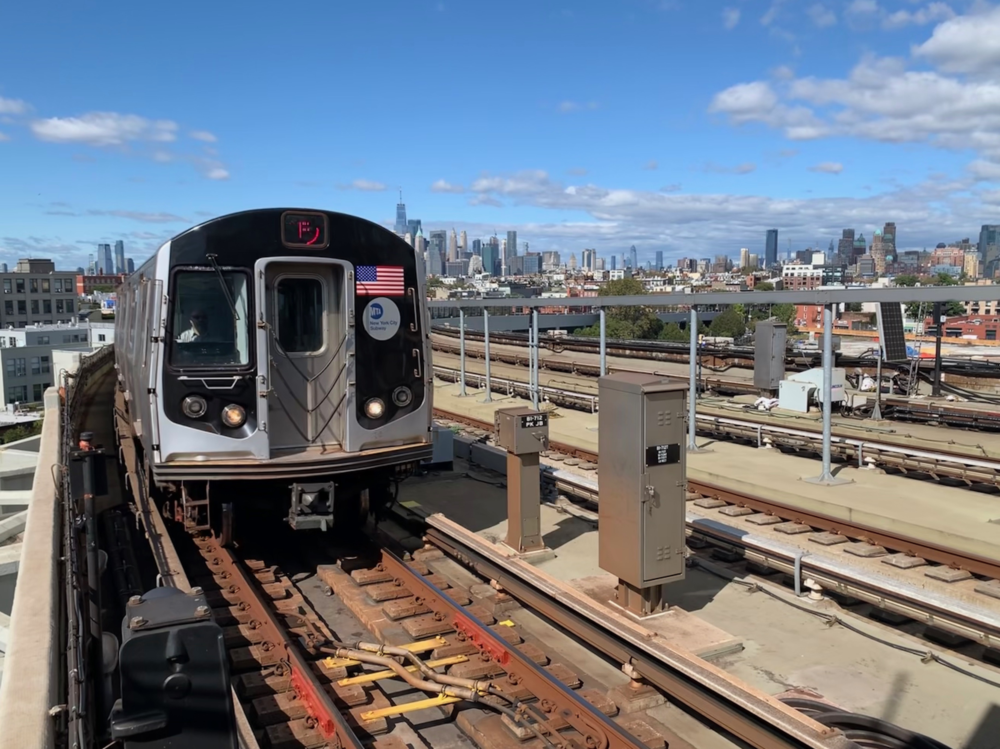
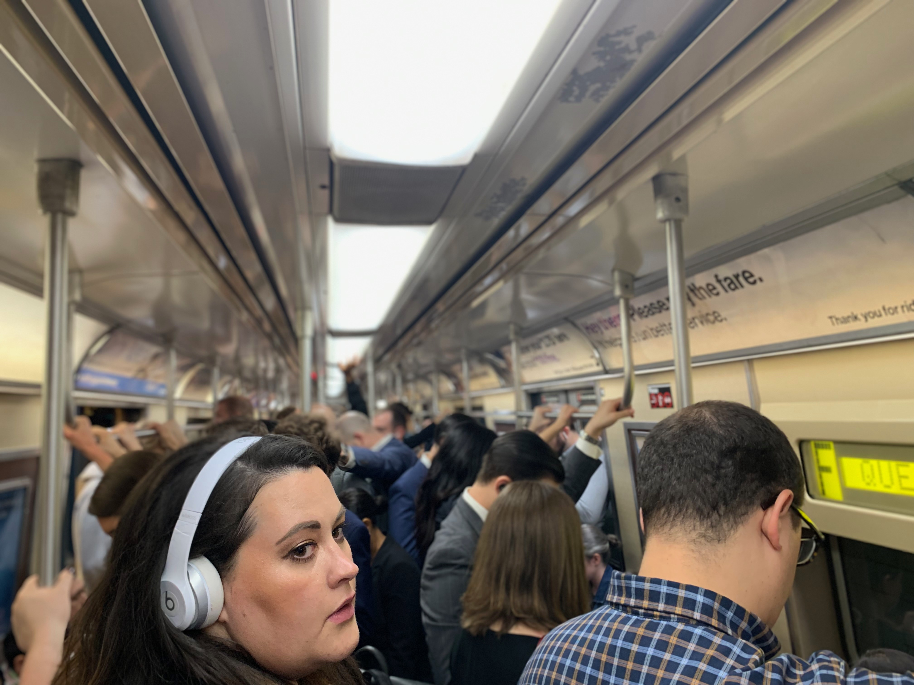

By Francesca Krempa
A Coney Island-bound F train approaches Smith-9th Street in Brooklyn, New York. The Brooklyn F line is one of the lengthiest commutes in all of NYC, with 26 stops between Coney Island-Stillwell Ave. and Broadway-Lafayette.
Sarah Brettschneider, 30, has been commuting into Manhattan from Park Slope for the past four years. The Human Resources Generalist currently works in Soho but has previously worked in Midtown and Flatiron—all, in some capacity, off the F train
But now, because of the F’s new express service from Coney Island early weekday mornings, Brettschneider’s stop at Fourth Ave.-Ninth St. in Brooklyn is skipped, leaving her to wait an extra 5-10 minutes for a local train. “It doesn’t make sense to me,” Brettschneider said. “My station has a transfer to the R line, so why wouldn’t it be included in the express service?”
Her commute home isn’t any easier. “I usually have to transfer at Jay Street to wait for a local train,” she said. “I have strong, negative feelings about it.
Since September 16, 2019, two F trains have run express from Coney Island to Manhattan between 7-8 a.m., barreling straight through six stops between Jay Street MetroTeck and Church Avenue. Commuters can take one of two express trains back to South Brooklyn between 5-6 p.m., avoiding the same stops.
The idea? To shorten the trip for residents in South Brooklyn, like Coney Island and Borough Park. But while Coney Islanders might be getting to Manhattan faster, a 2016 report by the Metropolitan Transportation Authority (MTA) indicates those whose stops are skipped might add up to an extra five minutes to their travel times.
Commuters ride the F train into Manhattan on Monday morning during rush hour. Since September 16, 2019, two new express F trains run from Coney Island to Manhattan during the morning commute, skipping six stops in Southwest Brooklyn.
Assemblymember Robert Carroll, who represents the 44th District in the New York State Assembly, explained on a call that he did not support the schedule change, mostly because of a general lack of capacity on the F line.
“They’re just reshuffling the deck,” he said. “They’re not actually adding service.”
Carroll, whose constituents live in Park Slope, Windsor Terrace, Kensington, and Ditmas Park, explained the MTA could have been more thoughtful in tackling service issues. “If you’re going to do a real express, you’ve got to actually get into southern Brooklyn quicker,” he said. “Why don’t we have an express at the very tail end of my district of the 18th Ave. stop? I think that would save a tremendous amount of time for folks.”
Other southwest Brooklyn straphangers aren’t happy the new express trains pass their stops during rush hour. “It’s just even harder to get a train in the morning,” said Rachel Berquist, 25, of Carroll Gardens. “I get that it’s helping a lot of people, but it’s a real inconvenience for me.”
And Berquist is right; The express train is helping many South Brooklyn riders. While a representative from Brooklyn Community Board 13 was unavailable for comment, the same 2016 MTA report states that the service will cut the commute approximately 6-7 minutes for around 12,900 people on weekdays.
Unfortunately, the solution for those in Park Slope, Gowanus, Carroll Gardens and Boerum Hill isn’t exactly clear. Separately, Michael Racioppo, district manager for Brooklyn Community Board 6 encouraged residents to continue voicing their frustrations in the meantime. “The more input we get from the community, the better,” he said.
Two express F trains leave Coney Island for Manhattan M-F, at 7:07 and 7:29 a.m., skipping six stops between Church Ave. and Jay Street MetroTech.
At 4:57 and 5:28 p.m., two express trains depart Lexington Ave./63 St. to head back to Coney Island. These Coney Island-bound trains skip the same six Brooklyn stops.
While those who use the skipped stops can expect to add up to five minutes to their commute, the new express offerings will shave 6-7 minutes to those coming from Coney Island. There's pros and cons to weight on each side.